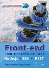

Front-end. Клиентская разработка для профессионалов. Node.js, ES6, REST

Описание товара
В книге "Front-end. Клиентская разработка для профессионалов" рассмотрены все важнейшие навыки работы с JavaScript, HTML5 и CSS3, требуемые серьезному разработчику, чтобы преуспеть в создании современного клиентского кода. Читатель быстро освоится с новыми инструментами и технологиями, с проверенными практиками, которые актуальны уже сегодня. В каждой главе рассматриваются важнейшие концепции и API, неотделимые от качественной веб-разработки, тщательно проверенные и отточенные в процессе решения реальных практических задач.
Характеристики товара
- Автор: Аквино К., Ганди Т.
- Тема: Программирование для интернета
- Год: 2017
- Страниц: 512
- Обложка: Обл Ц
- Формат: 70х100/16
- Баркод: 9785496029308
- ISBN: 978-5-496-02930-8
Подробное описание товара
В книге рассмотрены все важнейшие навыки работы с JavaScript, HTML5 и CSS3, требующиеся разработчику, чтобы преуспеть в создании современного клиентского кода. Изучая эту книгу, вы напишете четыре веб-приложения. Каждому приложению посвящена отдельная часть книги, а каждая глава добавляет в создаваемое приложение новые функциональные возможности. Создание этих четырех веб-приложений даст вам возможность изучить все технологии, требуемые для создания клиентской части.
- Ottergram. Наш первый проект посвящен веб-фотогалерее. Создание Ottergram научит вас основам программирования для браузеров с помощью языка разметки HTML, таблиц стилей CSS и языка программирования JavaScript. Вы вручную создадите пользовательский интерфейс и узнаете, как браузер загружает и визуализирует контент.
- CoffeeRun. Частично форма заказа кофе, частично — список заказов. CoffeeRun познакомит вас с множеством методов языка программирования JavaScript, включая написание модульного кода, использование преимуществ замыканий и взаимодействие с удаленным сервером с помощью технологии Ajax.
- Chattrbox. Часть, описывающая приложение Chattrbox, — самая короткая, и это приложение больше всего отличается от остальных. В нем будет использоваться язык программирования JavaScript для создания системы общения в Интернете, включая написание сервера чата с помощью платформы Node.js, а также браузерного клиента для чата.
- Tracker. Последний проект использует Ember.js — один из самых функциональных фреймворков для разработки клиентской части. Мы напишем приложение для каталогизации случаев наблюдения редких, экзотических и мифических существ. По ходу дела вы узнаете, как использовать возможности богатейшей экосистемы, лежащей в основе фреймворка Ember.js.
По мере создания этих приложений вы познакомитесь с множеством инструментов, включая:
- Текстовый редактор Atom и некоторые полезные плагины для работы с кодом;
- Источники документации, например Mozilla Developer Network;
- Командную строку с использованием приложения терминала OS X или командной строки Windows;
- Утилиту browser-sync;
- Инструменты разработчика браузера Google Chrome (Google Chrome’s Developer Tools);
- Файл normalize.css;
- Фреймворк Bootstrap;
- Библиотеки jQuery, crypto-js и moment;
- Платформу Node.js, систему управления пакетами Node (npm) и модуль nodemon;
- Протокол WebSockets и модуль wscat;
- Компилятор Babel и модули Babelify, Browserify и Watchify;
- Фреймворк Ember.js и такие дополнения к нему, как интерфейс командной строки Ember CLI, плагин для Chrome Ember Inspector, дополнение Ember CLI Mirage и шаблонизатор Handlebars;
- Систему управления пакетами Bower;
- Систему управления пакетами Homebrew;
- Утилиту Watchman.
© Все права защищены